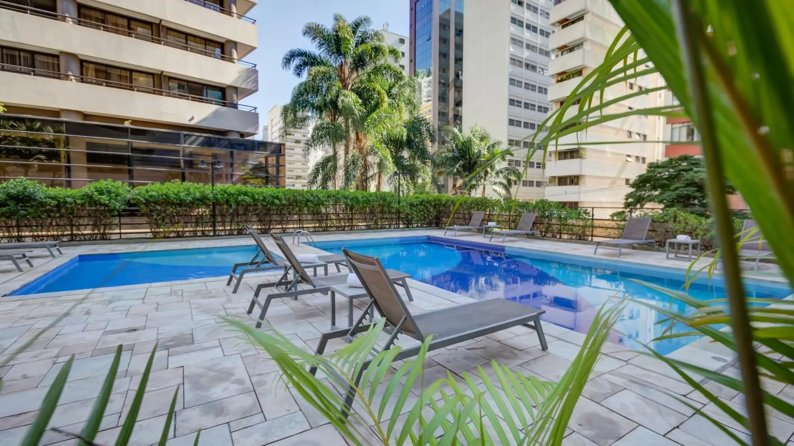

Conference Venue
Radisson Hotel Paulista
The conference will take place at the Radisson Paulista Hotel. It is located in the elegant and trendy Jardins neighborhood, one block from Avenida Paulista, near Casa das Rosas, and surrounded by various cultural and entertainment centers, restaurants, shopping malls, and services such as banks and pharmacies. Within an easy walking distance we can reach Shopping Patio Paulista and the Museum of Art of São Paulo Assis Chateaubriand (MASP). The nearest underground station, Brigadeiro station, is approximately a 5-minute walk away. Staying at the Radisson Paulista means enjoying a prime location in true São Paulo style.
Some points of interest and distance from the hotel:
| Location | Distance from Hotel |
|---|---|
| Paulista Avenue | 100 m |
| SESC Paulista | 200 m |
| Casa das Rosas | 270 m |
| Japan House | 370 m |
| Hcor & Santa Catarina Hospitals | 400 m |
| Brigadeiro Metro Station | 400 m |
| Pátio Paulista Mall | 400 m |
| Osvaldo Cruz Hospital | 600 m |
| Beneficência Portuguesa Hospital | 750 m |
| MASP (Museum of Art of São Paulo) | 1.6 km |
| Ibirapuera Park | 2.6 km |
| Congonhas Airport | 8 km |
| Guarulhos Airport | 31 km |
| Viracopos Airport | 97 km |
The hotel offered 25% of discounts to the participants. Requests should be sent to reservas.rdpa@ahi.com.br.